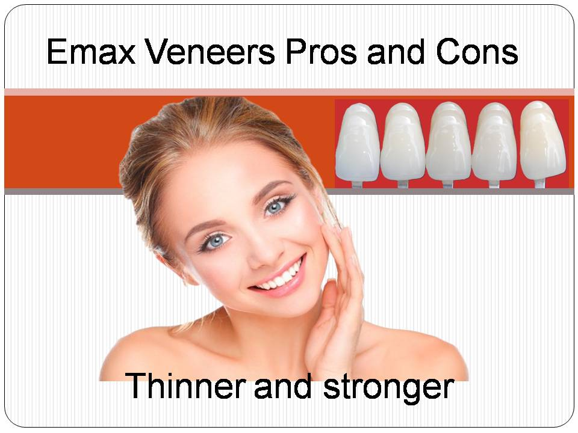
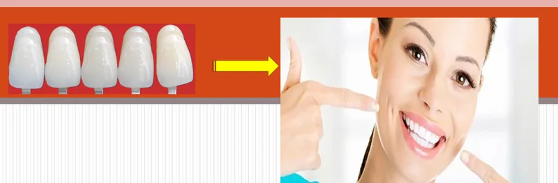
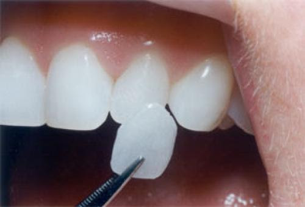

The variety of dental veneers is growing in accordance with demand. Dental cosmetic technology develops innovative products based on patient preferences. Those who want a perfect smile design also aim for the procedures performed on their teeth to be both unique to them and durable for a long time.
With today's latest technological possibilities, dental veneers have been thinner considerably. Therefore, the process of applying dental veneers involves less tooth shaving. If you want to have a more beautiful smile profile by taking advantage of this technology by having Emax veneers pros and cons, you will find everything you wonder about this subject below.
What are emax veneers?
Emax veneers are non-metal, very thin ceramic veneers applied to the front surface of the teeth, which provide a beautiful smile design by eliminating minor structural problems and aesthetic concerns.
What are E-max veneers made of?
Emaks veneers are ultra-thin, custom-made, durable dental veneers that are made of a type of glass ceramic that contains lithium and silicate, also known as lithium disilicate.
What is the difference between Emax veneer and other tooth veneers?
The biggest difference between emax veneers and other types of dental veneers (porcelain, composite, and lumine veneers) is that emax veneers are thinner, stronger, and necessitate less tooth reduction. Additional advantages are detailed in the subsequent paragraphs.
In which cases can you choose Emax dental veneers?

- Broken or cracked teeth
- Gaps between teeth and problems with tooth alignment
- Form and shape disorders in teeth
- Discolouration of the teeth
- Dental aesthetics concerns
If you have any of the following conditions, you can get rid of these problems with emax veneers method.
Broken or cracked teeth
You can use emax veneers to repair broken, cracked, or worn teeth. Thus, you eliminate both your dental problems and achieve an aesthetic dental appearance.
Gaps between teeth and problems with tooth alignment:
Whether you have gaps or misaligned teeth, emax dental veneers can help. Thanks to Emax veneers, you will get rid of these problems and have a perfect smile profile.
Form and shape disorders in teeth:
If you own misaligned teeth, size discrepancies, or other deformities, you may opt for emax dental veneers to rectify your tooth form. Therefore, you will address issues pertaining to dental aesthetics.
Discolouration of the teeth:
If your teeth are discoloured and stained, or if your teeth are not white enough with the teeth whitening process, emax dental veneers will be a good choice for you.
Dental aesthetics concerns:
You may especially want your front teeth to have a more aesthetic appearance. In this case, the best option is emax dental veneers.
What are the pros of E-max veneers?
We will define the advantages of Emax veneers in comparison to other types of dental veneers as pros and their disadvantages as cons. Initially, let us address the advantages, namely the pros.
More durable and long-lasting:
Emax veneers made of a lithium disilicate base material have higher durability than other types of veneers. The risk of cracking and fracture is lower than in other porcelain veneers. It is more resistant to chewing force. You can use it for a long time if you follow the procedure properly.
Less need for tooth shaving:
Because Emax veneers are thinner than other veneers, applying them requires shaving fewer teeth. Since it requires minimal abrasion from the tooth surface, the natural structure and tissue of the teeth are largely preserved. . This shortens the procedure time.
Resistance to stains:
Emax veneers are very durable and resistant to tooth stains and discoloration caused by some of your habits (such as coffee, tea, and smoking).With Emax veneers, you will always have a bright and white smile.
Preferable for many dental problems:
Emax veneers provide a significant advantage in the remedying of various dental problems. We have explained above in which cases Emax veneers can be preferred.
Personalised design and natural look.
Emax venners can be designed individually. Dentists and dental technicians take your wishes and make a computer-aided design that is compatible with your face type. Your designed teeth are precisely processed with a 3D printer.
After the new emax veneers are prepared, the procedures on your teeth are started. The emax veneers are then placed. Your veneers are unique to you and look natural.
Emax Veneers Cons
Although Emax veneers have many advantages, there are also very few disadvantages, i.e., cons.
Sensitivity of the teeth, chewing, and irritation of the gums:
After the placement of emax veneers, some people may experience temporary, mild sensitivity. This sensitivity will go away after a week or two, while gum irritation is usually rare. If emax veneers are not placed or bonded well, they can cause irritation of the gums. In this case, your dentist will make the necessary adjustments.
Irreversibility:
Once placed, Emax veneers are irreversible. If you decide to have your Emax veneers removed, remember that your teeth will need to be reshaped or additional procedures will be needed to place new veneers.
Cost:
Emax veneers are generally more expensive than other types of veneers. However, the cost will be determined by factors such as which procedures, such as tooth preparation or gum shaping, will be performed, the number of veneers needed, the experience of the dentist, and the location of the dental clinic.
How are E-max veneers prepared?
When you and your doctor decide to have emax veneers, the following procedures will be performed.
Digital imaging:
First, your dentist will take high-resolution digital images of your teeth and gums with an intraoral scanner. If you opt for emax veneers, your dentist will carry out the subsequent procedures. It can also be referred to as digital measurement.
Design:
With computer software, the design of the veneer to be applied to your teeth is made in accordance with your face type. Thus, the shape and dimensions of the emax veneer, which will be unique to you, are determined.
Production of the e-max veneers:
A 3D printer processes the prepared design into lithium disilicate material. Then the necessary corrections are made in the laboratory or clinic.
Shaving the tooth surfaces:
According to the measurements in the design, some shaving is done from the front surfaces of your teeth. Thus, your teeth are ready for the emax veneer to be placed.
Temporary veneers.
Temporary veneers can be used to protect your teeth until permanent veneers are made.
Bonding:

The tooth surfaces are cleaned with a special acid, and permanent emax veneers are bonded to your teeth with a special adhesive. UV light then hardens the adhesive.
Check:
After fixing the emax veneers, the dentist performs final checks to ensure their alignment and harmony. Your e-max veneers are now ready for use. You can use them with peace of mind.
E-max veneers: frequently asked questions
Are e-max veneers the best type of veneers?
The answer to this question depends on your purpose of veneers. If you want your veneer to be thin, durable, and long-lasting, you can choose emax veneers.
What should be considered when using emax veneers?
First of all, excellent oral hygiene is essential. In order to maintain oral hygiene, it is necessary to brush teeth and floss regularly. You will also need to be extremely careful when chewing tough foods. It is also important to have routine dental check-ups.
Are emax veneers permanent?
If you use them carefully, you will not need to replace them for many years. But over time, emax veneers also wear out and need to be replaced.
Can emax veneers be removed?
Occasionally, emax veneers may require upkeep and modification. They may also need to be removed for this. However, you cannot remove the emax veneers yourself. Your doctor is the only one who can do this.
Will there be pain when I get Emax veneers?
Your dentist will carry out the necessary procedures to ensure your comfort throughout this procedure. Some patients feel very little pain, while others feel no pain at all.
Are E-max veneers also used as crowns?
Yes, Emax can be used for both crowns and veneers.
Do emax veneers look natural?
Of course. Yes. E-max veneers are veneers that can transmit light, are translucent, and are compatible with your natural tooth colour. When you have these veneers, you will have a completely natural smile design.
What is the maximum duration of using Emax veneers?
You can use it without replacement for up to 15 years, or even longer, if you use it carefully and schedule regular doctor's check-ups.